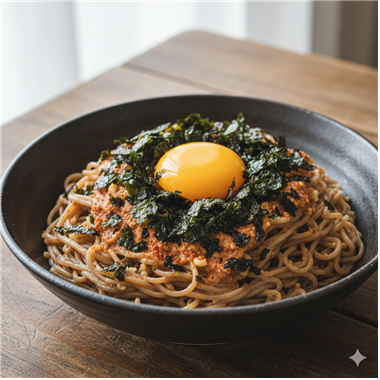
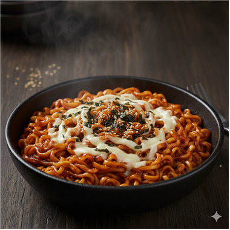
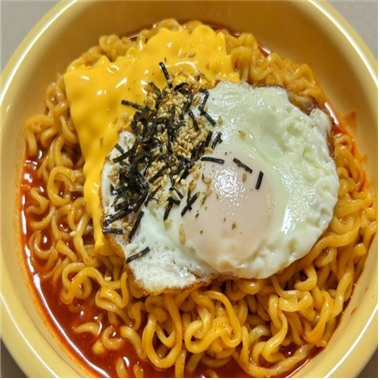
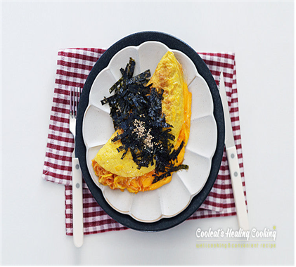

🍖 든든한 불닭 레시피

고슬하게 볶아준 후 까르보 액상+분말스프로 코팅하면 미쳤다… 크리미 불닭 볶음밥 완성!

불닭 우동계의 종결자.

메밀에 들기름 향 쫙 깔고, 불닭·불마요로 매콤꾸덕 코팅한 다음 노른자 톡— 김자반으로 마무리하면… 이건 불닭 비빔면의 사무라이 버전.

면을 때려부수고 밥까지 투척한 뒤 우유로 부드럽게 조지고 불닭소스로 마무리하면… 치트키급 중독성의 ‘까르보라죽’ 탄생!

짜파게티의 풍미 + 불닭의 화력 + 모짜렐라 치즈의 치즈폭발 조합!

불닭 + 치즈 + 반숙후라이 = 무조건 맛있는 공식

계란찜 위에 불닭 얹고 치즈 녹이면 인생 맵부심 요리 탄생

버터 계란지단 속 소세지 불닭 치즈 폴딩

면을 때려부수고 밥까지 투척한 뒤 우유로 부드럽게 조지고 불닭소스로 마무리하면… 치트키급 중독성의 ‘까르보라죽’ 탄생!